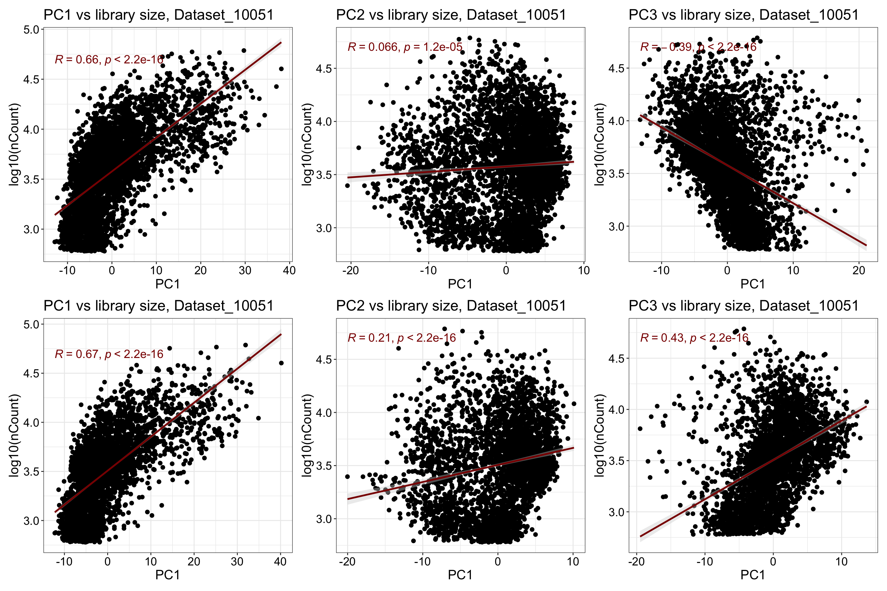
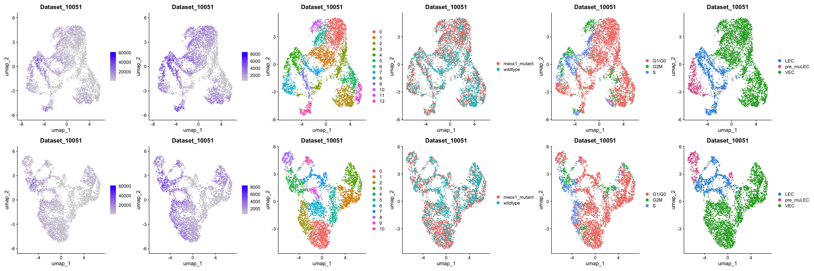
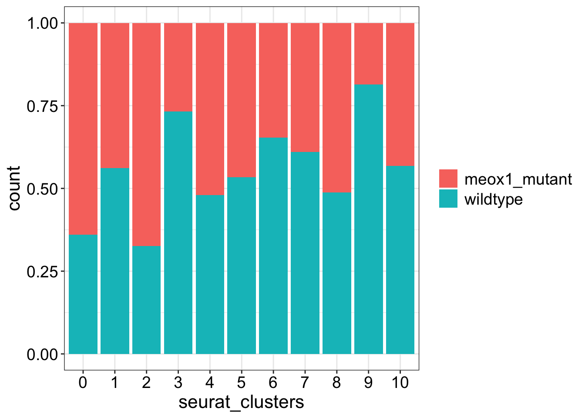
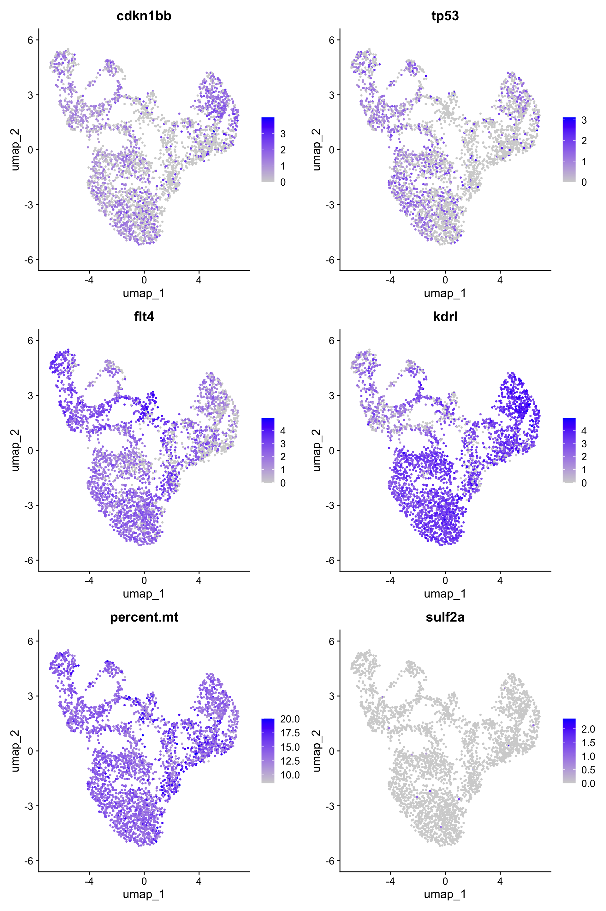
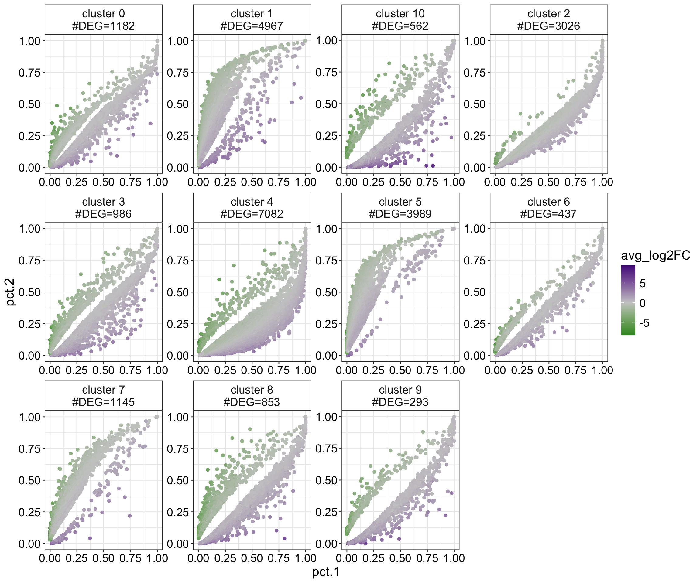

D10051 meox1 dataset: Make Level 03 (LEC/VEC only) object
Michelle Meier
21. June 2026
Last updated: 2026-06-21
Checks: 7 0
Knit directory: yap1_meox1_paper/
This reproducible R Markdown analysis was created with workflowr (version 1.7.1). The Checks tab describes the reproducibility checks that were applied when the results were created. The Past versions tab lists the development history.
Great! Since the R Markdown file has been committed to the Git repository, you know the exact version of the code that produced these results.
Great job! The global environment was empty. Objects defined in the global environment can affect the analysis in your R Markdown file in unknown ways. For reproduciblity it’s best to always run the code in an empty environment.
The command set.seed(20260119) was run prior to running
the code in the R Markdown file. Setting a seed ensures that any results
that rely on randomness, e.g. subsampling or permutations, are
reproducible.
Great job! Recording the operating system, R version, and package versions is critical for reproducibility.
Nice! There were no cached chunks for this analysis, so you can be confident that you successfully produced the results during this run.
Great job! Using relative paths to the files within your workflowr project makes it easier to run your code on other machines.
Great! You are using Git for version control. Tracking code development and connecting the code version to the results is critical for reproducibility.
The results in this page were generated with repository version ca29fde. See the Past versions tab to see a history of the changes made to the R Markdown and HTML files.
Note that you need to be careful to ensure that all relevant files for
the analysis have been committed to Git prior to generating the results
(you can use wflow_publish or
wflow_git_commit). workflowr only checks the R Markdown
file, but you know if there are other scripts or data files that it
depends on. Below is the status of the Git repository when the results
were generated:
Ignored files:
Ignored: .DS_Store
Ignored: .Rhistory
Ignored: .Rproj.user/
Ignored: analysis/.DS_Store
Ignored: code/.DS_Store
Ignored: code/scRNAseq/.DS_Store
Ignored: code/scRNAseq/analysis/.DS_Store
Ignored: code/scRNAseq/pre_processing/.DS_Store
Ignored: code/snATACseq/
Ignored: data/.DS_Store
Ignored: data/genesets/
Ignored: data/input/
Ignored: output/.DS_Store
Ignored: output/analysis/
Ignored: output/data/
Ignored: output/figures/
Ignored: renv/library/
Ignored: renv/staging/
Unstaged changes:
Modified: code/scRNAseq/analysis/D10025_yap1_dataset/D10025_yap1_dataset_analysis_degs_EXPLOREONLY.R
Note that any generated files, e.g. HTML, png, CSS, etc., are not included in this status report because it is ok for generated content to have uncommitted changes.
These are the previous versions of the repository in which changes were
made to the R Markdown
(analysis/pre_processing_D10051_meox1_dataset_makeObject_Level03.Rmd)
and HTML
(docs/pre_processing_D10051_meox1_dataset_makeObject_Level03.html)
files. If you’ve configured a remote Git repository (see
?wflow_git_remote), click on the hyperlinks in the table
below to view the files as they were in that past version.
| File | Version | Author | Date | Message |
|---|---|---|---|---|
| Rmd | ca29fde | Michelle Meier | 2026-06-21 | wflow_publish("analysis/pre_processing_D10051_meox1_dataset_makeObject_Level03.Rmd") |
| html | 056ab8b | Michelle Meier | 2026-02-01 | Build site. |
| Rmd | fbc233c | Michelle Meier | 2026-02-01 | wflow_publish("analysis/pre_processing_D10051_meox1_dataset_makeObject_Level03.Rmd") |
Introduction
Making Level 03 object for meox1 dataset.
Set-up
Load libraries
suppressPackageStartupMessages({
library(tidyverse)
library(here)
library(Seurat)
library(scDblFinder)
library(ggpubr)
library(clustree)
library(patchwork)
library(scater)
library(scran)
library(qs2)
library(scGate)
})Load data
Made here: ./pre_processing_D10051_meox1_dataset_makeObject_Level02_annotation.Rmd
input_paths <- c(here('output/data/Datsets/D10051_meox1_dataset/D10051_meox1_dataset_Level_02_kept_doublets_annotated.qs2'),
here('output/data/Datsets/D10051_meox1_dataset/D10051_meox1_dataset_Level_02_annotated.qs2'))
list_objects <- lapply(input_paths, qs_read)
names(list_objects) <- gsub("\\.qs2", "", basename(input_paths))Plotting themes
plot_sizing <- theme_bw()+ theme(axis.title = element_text(size = 16),
axis.text = element_text(size = 14, colour = "black"),
plot.title = element_text(size = 18),
legend.text = element_text(size = 14),
legend.title = element_blank())
plot_sizing_keeplegend <- theme_bw()+ theme(axis.title = element_text(size = 16),
axis.text = element_text(size = 14, colour = "black"),
plot.title = element_text(size = 18),
legend.text = element_text(size = 14),
legend.title = element_text(size = 16))
plot_sizing_seurat <- theme(axis.title = element_text(size = 16),
axis.text = element_text(size = 14, colour = "black"),
plot.title = element_text(size = 18),
legend.text = element_text(size = 14))
rotate_x <- theme(axis.text.x = element_text(angle = 90, vjust = 0.5, hjust=1))
strip_fix <- theme(strip.background = element_rect(fill = "white"),
strip.text = element_text(size = 14))Subset datasets: LEC/VEC clusters only
Subset Level 01 to only include LEC and VEC subsets. Annotation was done in pre_processing_D10051_meox1_dataset_makeObject_Level02_annotation.Rmd
celltype_to_keep <- c("LEC", "VEC", "pre_muLEC")
run_subset_lecvec <- function(seurat, keep = celltype_to_keep){
cells_to_keep <- seurat@meta.data %>%
filter(., L2_celltype %in% celltype_to_keep) %>%
rownames_to_column("Barcode") %>%
pull(Barcode)
seurat <- subset(seurat, cells = cells_to_keep)
return(seurat)
}list_objects$D10051_meox1_dataset_Level_03_kept_doublets <- run_subset_lecvec(list_objects$D10051_meox1_dataset_Level_02_kept_doublets_annotated)
list_objects$D10051_meox1_dataset_Level_03 <- run_subset_lecvec(list_objects$D10051_meox1_dataset_Level_02_annotated)Clean up list, remove Level 02
list_objects$D10051_meox1_dataset_Level_02_kept_doublets_annotated <- list_objects$D10051_meox1_dataset_Level_02_annotated <- NULL
gc() used (Mb) gc trigger (Mb) limit (Mb) max used (Mb)
Ncells 12048873 643.5 19738832 1054.2 NA 16746022 894.4
Vcells 87077870 664.4 281444112 2147.3 49152 348043885 2655.4Replace name in object
list_objects$D10051_meox1_dataset_Level_03_kept_doublets@misc$name <- "Level_03_kept_doublets"
list_objects$D10051_meox1_dataset_Level_03@misc$name <- "Level_03"Re-run single-cell workflow
Not using sctransform, regressing out %mito. Same function we used for Level 01, 02
run_workflow <- function(seurat){
seurat <- NormalizeData(seurat) %>% #this is technically unneccessary, but also won't hurt
FindVariableFeatures() %>%
ScaleData(., vars.to.regress = c("percent.mt")) %>%
RunPCA() %>%
RunUMAP(., dims = 1:30) %>% #defaults
FindNeighbors(., dims = 1:30) %>%
FindClusters(., resolution = seq(0.1, 1, 0.1)) #this will overwrite old clustering (that's okay)
}list_objects <- lapply(list_objects, run_workflow)Normalizing layer: countsFinding variable features for layer countsRegressing out percent.mtCentering and scaling data matrixWarning: Different features in new layer data than already exists for
scale.dataPC_ 1
Positive: pcna, tubb2b, hist1h4l.11, mki67, stmn1a, tuba8l4, CABZ01058261.1, hist1h4l.16, hmga1a, seta
anp32b, cirbpa, chaf1a, hist1h4l.6, sumo3b, h3f3b.1, ebf3a.1, setb, pclaf, rbbp4
si:dkey-108k21.10, rrm1, top2a, hist1h2a6, ranbp1, tpx2, banf1, h2ax, hnrnpabb, abcf1
Negative: bmp6, CABZ01021592.1, gpm6ab, lyve1a, magi2a, CR848683.2, edn1, LO018188.1, socs3a, slit2
fn1a, smad6b, kcnn1a, nkain4, adma, emid1, hs6st3a, rgcc, sdk1a, ism2a
krt94, eppk1, bmpr1ab, hs6st1b, kif26aa, id2b, rbfox3a, edn2, hapln3, krt4
PC_ 2
Positive: cxcl12a, rgcc, mrc1b, cebpb, postnb, emid1, ralgapa2, si:ch211-250c4.4, pxk, cyp1a
exoc3l2a, tshz2, sema3fb, tnfaip2b, flt4, hs3st3b1b, hoxb8a, mtss1lb, meis2a.1, nr2f5
tmem108, nectin1b, slco2b1, sema4c, ptmaa, ebf3a, pcdh17, gdpd5b, tmem88a, npl
Negative: gpm6ab, fn1a, igfbp1a, sdk1a, arhgap36, nkain4, ptn, LO018188.1, nkd1, bmp6
slit2, ism2a, edn2, hs6st3a, atrnl1a, rbfox3a, BX537310.2, adma, smad6b, edn1
lyve1a, igdcc3, hapln1b, kif26aa, cdh6, hs6st1b, nhsl2, efnb3b, cthrc1a, lef1
PC_ 3
Positive: aspm, top2a, kif20a, dlgap5, cenpf, tpx2, kifc1, mki67, mad2l1, plk1
nusap1, ube2c, hmmr, diaph3, tacc3, kif14, cenpe, cita, cdk1, si:dkey-108k21.10
nuf2, kif11, ect2, kpna2, CABZ01058261.1, cdc20, prc1b, g2e3, kif23, zgc:173552.3
Negative: mcm2, mcm5, mcm6, marcksl1a, mcm3, akap12b, hells, npm1a, eef2b, nasp
cdca7a, ncl, eif4a1a, nop56, hspd1, cct4, fbl, eif4g1a, nop58, snu13b
si:ch211-222l21.1, cirbpa, ran, cct7, dkc1, msna, jdp2b, c1qbp, si:dkey-56m19.5, hnrnpabb
PC_ 4
Positive: hmgn2, hmgb2a, prdx1, rgcc, hmgb2b, h3f3b.1, socs3a, ran, si:ch211-288g17.3, si:ch73-281n10.2
podxl, banf1, hmga1a, dut, snrpd1, krt94, cebpb, si:ch211-222l21.1, seta, fabp11a
tubb2b, cav1, marcksl1a, hnrnpabb, cbx3a, tuba8l4, cnbpa, cirbpa, anp32b, tp53inp2
Negative: vav3b.1, ebf3a.1, six2a, UNC13B, ralgapa2, eya1, iqsec1b, zeb2b, sema6e, ebf3a
diaph2, tanc2a, gpc6a, agap1, prox1a, pappab, plxna2, gab2, ptprua, svild
kcnq5b, ZNF423, colec12, strbp, bcl11aa, NAV1, rbpjb, ptprga, col11a1b, trps1
PC_ 5
Positive: osr2, mafa, zeb2b, hmgn2, tuba1b, cdh6, si:ch211-227m13.1, ap1s3b, cdc20, rnf220a
tp53inp2, rbpjb, nrp2a, tmem59l, nav2a, ube2c, kmt5ab, zgc:113363, foxl2b, kif11
ccnb1, hmgb2a, C7H16orf87, hspe1, npm1a, nhp2, hmgb2b, prox1a, h3f3b.1, marcksl1a
Negative: emid1, diaph2, podxl, CR848683.2, cav1, col8a2, tmem108, lrmda, pola1, prim2
mmrn2a, magi2a, postnb, rgcc, exoc3l2a, bmpr2b, inpp4b, lig1, flt1, atad2
pole, sema3fb, prex2, diaph3, e2f8, itga8, CABZ01005379.1, tshz2, CR936977.2, cdc6 Warning: The default method for RunUMAP has changed from calling Python UMAP via reticulate to the R-native UWOT using the cosine metric
To use Python UMAP via reticulate, set umap.method to 'umap-learn' and metric to 'correlation'
This message will be shown once per session17:08:48 UMAP embedding parameters a = 0.9922 b = 1.11217:08:48 Read 4418 rows and found 30 numeric columns17:08:48 Using Annoy for neighbor search, n_neighbors = 3017:08:48 Building Annoy index with metric = cosine, n_trees = 500% 10 20 30 40 50 60 70 80 90 100%[----|----|----|----|----|----|----|----|----|----|**************************************************|
17:08:48 Writing NN index file to temp file /var/folders/cx/d_5b9pls2cq2mv2m5jlps271lnn8nd/T//RtmpgXT0U0/file15a2612c779c7
17:08:48 Searching Annoy index using 1 thread, search_k = 3000
17:08:49 Annoy recall = 100%
17:08:49 Commencing smooth kNN distance calibration using 1 thread with target n_neighbors = 30
17:08:50 Initializing from normalized Laplacian + noise (using RSpectra)
17:08:50 Commencing optimization for 500 epochs, with 181930 positive edges
17:08:50 Using rng type: pcg
17:08:53 Optimization finished
Computing nearest neighbor graph
Computing SNNModularity Optimizer version 1.3.0 by Ludo Waltman and Nees Jan van Eck
Number of nodes: 4418
Number of edges: 165464
Running Louvain algorithm...
Maximum modularity in 10 random starts: 0.9314
Number of communities: 3
Elapsed time: 0 seconds
Modularity Optimizer version 1.3.0 by Ludo Waltman and Nees Jan van Eck
Number of nodes: 4418
Number of edges: 165464
Running Louvain algorithm...
Maximum modularity in 10 random starts: 0.8977
Number of communities: 5
Elapsed time: 0 seconds
Modularity Optimizer version 1.3.0 by Ludo Waltman and Nees Jan van Eck
Number of nodes: 4418
Number of edges: 165464
Running Louvain algorithm...
Maximum modularity in 10 random starts: 0.8742
Number of communities: 7
Elapsed time: 0 seconds
Modularity Optimizer version 1.3.0 by Ludo Waltman and Nees Jan van Eck
Number of nodes: 4418
Number of edges: 165464
Running Louvain algorithm...
Maximum modularity in 10 random starts: 0.8553
Number of communities: 7
Elapsed time: 0 seconds
Modularity Optimizer version 1.3.0 by Ludo Waltman and Nees Jan van Eck
Number of nodes: 4418
Number of edges: 165464
Running Louvain algorithm...
Maximum modularity in 10 random starts: 0.8401
Number of communities: 9
Elapsed time: 0 seconds
Modularity Optimizer version 1.3.0 by Ludo Waltman and Nees Jan van Eck
Number of nodes: 4418
Number of edges: 165464
Running Louvain algorithm...
Maximum modularity in 10 random starts: 0.8272
Number of communities: 11
Elapsed time: 0 seconds
Modularity Optimizer version 1.3.0 by Ludo Waltman and Nees Jan van Eck
Number of nodes: 4418
Number of edges: 165464
Running Louvain algorithm...
Maximum modularity in 10 random starts: 0.8160
Number of communities: 11
Elapsed time: 0 seconds
Modularity Optimizer version 1.3.0 by Ludo Waltman and Nees Jan van Eck
Number of nodes: 4418
Number of edges: 165464
Running Louvain algorithm...
Maximum modularity in 10 random starts: 0.8052
Number of communities: 12
Elapsed time: 0 seconds
Modularity Optimizer version 1.3.0 by Ludo Waltman and Nees Jan van Eck
Number of nodes: 4418
Number of edges: 165464
Running Louvain algorithm...
Maximum modularity in 10 random starts: 0.7946
Number of communities: 13
Elapsed time: 0 seconds
Modularity Optimizer version 1.3.0 by Ludo Waltman and Nees Jan van Eck
Number of nodes: 4418
Number of edges: 165464
Running Louvain algorithm...
Maximum modularity in 10 random starts: 0.7848
Number of communities: 13
Elapsed time: 0 secondsNormalizing layer: counts
Finding variable features for layer counts
Regressing out percent.mt
Centering and scaling data matrixWarning: Different features in new layer data than already exists for
scale.dataPC_ 1
Positive: pcna, tubb2b, hmga1a, tuba8l4, stmn1a, cirbpa, seta, anp32b, mki67, hist1h4l.11
setb, chaf1a, sumo3b, CABZ01058261.1, npm1a, h3f3b.1, hnrnpabb, rbbp4, ranbp1, banf1
ncl, eif4a1a, abcf1, hist1h4l.16, ddx39ab, hmgb2b, ran, cbx3a, anp32a, hnrnpa0b
Negative: bmp6, CABZ01021592.1, gpm6ab, lyve1a, magi2a, CR848683.2, edn1, fn1a, LO018188.1, smad6b
nkain4, kcnn1a, sdk1a, hs6st3a, socs3a, adma, ism2a, emid1, atrnl1a, rbfox3a
pmp22b, si:dkey-251i10.2, aqp1a.1, icn, lhfpl6, kif26aa, hapln1b, krt4, dgkg, CU929160.1
PC_ 2
Positive: cxcl12a, rgcc, hlx1, cebpb, mrc1b, emid1, exoc3l2a, postnb, si:ch211-250c4.4, pxk
crip2, tshz2, cyp1a, sema3fb, hs3st3b1b, hoxb8a, selenop, adam12, nr2f5, tmem108
actb1, mcamb, tcima, glula, ptmaa, podxl, ralgapa2, mafba, nectin1b, eef2b
Negative: fn1a, gpm6ab, igfbp1a, sdk1a, arhgap36, nkain4, cdh6, LO018188.1, nkd1, BX537310.2
ptn, atrnl1a, ism2a, rbfox3a, edn2, hs6st3a, bmp6, igdcc3, smad6b, adma
hapln1b, lyve1a, edn1, efnb3b, cthrc1a, fgf10b, kif26aa, lef1, angpt1, rab8b
PC_ 3
Positive: rab8b, socs3a, marcksl1a, akap12b, krt94, si:ch211-222l21.1, tgm2b, actb1, jdp2b, adma
gpm6ab, CABZ01075125.1, eef2b, prdx1, igfbp1a, ran, ptn, lyve1a, got1, sox7
eppk1, msna, si:ch73-335l21.4, edn1, nkd1, hnrnpabb, cct3, cirbpa, cthrc1a, junbb
Negative: ralgapa2, ebf3a, diaph3, cita, kif20a, top2a, kif14, CABZ01021592.1, ect2, aspm
dlgap5, flt4, iqgap3, hmmr, mad2l1, si:dkey-108k21.10, cenpe, tpx2, kifc1, cdk1
cenpf, ncaph, racgap1, kif2c, si:ch211-113a14.24, zgc:173552.3, tacc3, numa1, si:ch211-113a14.19.2, si:dkey-25o16.4
PC_ 4
Positive: rgcc, pmp22b, mcamb, podxl, emid1, cebpb, hlx1, cav1, mrc1b, fabp11a
socs3a, prdx1, exoc3l2a, sema3fb, hs3st3b1b, cyp26b1, nr2f5, ehd2b, hoxb8a, mki67
cxcl12a, cd81b, CABZ01058261.1, efemp2b, cyp1a, zgc:110425, plk1, atf3, CR848683.2, hist1h4l.16
Negative: ebf3a.1, zeb2b, prox1a, vav3b.1, gpc6a, rbpjb, eya1, UNC13B, six2a, osr2
sema6e, pappab, svild, nrp2a, bcl11aa, rnf220a, zfpm2b, si:ch211-227m13.1, kcnq5b, trps1
add3a, tanc2a, NAV1, cpeb3, colec12, gpt2, agap1, cdh6, ptprua, daam1b
PC_ 5
Positive: pola1, tmem108, prim2, ctdp1, mmrn2a, CR848683.2, rad18, pole, lig1, lrmda
itga9, msh6, scube3, adarb1b, CABZ01005379.1, flt1, cdc6, emid1, inpp4b, adgrl3.1
diaph3, thrab, chaf1a, atad2, meox2a, wdhd1, nfatc1, sema4c, podxl, nfia
Negative: hmgn2, osr2, hmgb2a, cdc20, ube2c, tuba1b, tp53inp2, mafa, actb1, hmgb2b
si:ch73-281n10.2, h3f3b.1, kmt5ab, ccnb1, si:ch211-288g17.3, kif11, nusap1, aspm, hmga1a, h2ax1
hnrnpa0b, cdca8, marcksl1a, pttg1, kpna2, dlgap5, cdc14b, hspe1, glula, si:ch211-69g19.2
17:09:04 UMAP embedding parameters a = 0.9922 b = 1.112
17:09:04 Read 3349 rows and found 30 numeric columns
17:09:04 Using Annoy for neighbor search, n_neighbors = 30
17:09:04 Building Annoy index with metric = cosine, n_trees = 50
0% 10 20 30 40 50 60 70 80 90 100%
[----|----|----|----|----|----|----|----|----|----|
**************************************************|
17:09:04 Writing NN index file to temp file /var/folders/cx/d_5b9pls2cq2mv2m5jlps271lnn8nd/T//RtmpgXT0U0/file15a26660c0172
17:09:04 Searching Annoy index using 1 thread, search_k = 3000
17:09:04 Annoy recall = 100%
17:09:05 Commencing smooth kNN distance calibration using 1 thread with target n_neighbors = 30
17:09:05 Initializing from normalized Laplacian + noise (using RSpectra)
17:09:05 Commencing optimization for 500 epochs, with 136526 positive edges
17:09:05 Using rng type: pcg
17:09:08 Optimization finished
Computing nearest neighbor graph
Computing SNNModularity Optimizer version 1.3.0 by Ludo Waltman and Nees Jan van Eck
Number of nodes: 3349
Number of edges: 128884
Running Louvain algorithm...
Maximum modularity in 10 random starts: 0.9291
Number of communities: 3
Elapsed time: 0 seconds
Modularity Optimizer version 1.3.0 by Ludo Waltman and Nees Jan van Eck
Number of nodes: 3349
Number of edges: 128884
Running Louvain algorithm...
Maximum modularity in 10 random starts: 0.8941
Number of communities: 4
Elapsed time: 0 seconds
Modularity Optimizer version 1.3.0 by Ludo Waltman and Nees Jan van Eck
Number of nodes: 3349
Number of edges: 128884
Running Louvain algorithm...
Maximum modularity in 10 random starts: 0.8699
Number of communities: 6
Elapsed time: 0 seconds
Modularity Optimizer version 1.3.0 by Ludo Waltman and Nees Jan van Eck
Number of nodes: 3349
Number of edges: 128884
Running Louvain algorithm...
Maximum modularity in 10 random starts: 0.8516
Number of communities: 8
Elapsed time: 0 seconds
Modularity Optimizer version 1.3.0 by Ludo Waltman and Nees Jan van Eck
Number of nodes: 3349
Number of edges: 128884
Running Louvain algorithm...
Maximum modularity in 10 random starts: 0.8367
Number of communities: 8
Elapsed time: 0 seconds
Modularity Optimizer version 1.3.0 by Ludo Waltman and Nees Jan van Eck
Number of nodes: 3349
Number of edges: 128884
Running Louvain algorithm...
Maximum modularity in 10 random starts: 0.8203
Number of communities: 8
Elapsed time: 0 seconds
Modularity Optimizer version 1.3.0 by Ludo Waltman and Nees Jan van Eck
Number of nodes: 3349
Number of edges: 128884
Running Louvain algorithm...
Maximum modularity in 10 random starts: 0.8063
Number of communities: 9
Elapsed time: 0 seconds
Modularity Optimizer version 1.3.0 by Ludo Waltman and Nees Jan van Eck
Number of nodes: 3349
Number of edges: 128884
Running Louvain algorithm...
Maximum modularity in 10 random starts: 0.7934
Number of communities: 11
Elapsed time: 0 seconds
Modularity Optimizer version 1.3.0 by Ludo Waltman and Nees Jan van Eck
Number of nodes: 3349
Number of edges: 128884
Running Louvain algorithm...
Maximum modularity in 10 random starts: 0.7809
Number of communities: 11
Elapsed time: 0 seconds
Modularity Optimizer version 1.3.0 by Ludo Waltman and Nees Jan van Eck
Number of nodes: 3349
Number of edges: 128884
Running Louvain algorithm...
Maximum modularity in 10 random starts: 0.7704
Number of communities: 11
Elapsed time: 0 secondsPCA correlations
run_pca_correlations <- function(seurat){
plot_list <- list()
meta <- seurat@meta.data %>%
mutate(., log10ncount = log10(nCount_RNA),
log10nfeat = log10(nFeature_RNA)) %>%
select(., log10ncount, log10nfeat) %>%
rownames_to_column("Barcode") %>%
full_join(., seurat@reductions$pca@cell.embeddings %>% as.data.frame() %>% rownames_to_column("Barcode") %>% select(., Barcode, PC_1, PC_2,PC_3))
#ncount
plot_list[[1]] <- ggscatter(meta, x = "PC_1", y = "log10ncount",
add = "reg.line",
conf.int = TRUE,
add.params = list(color = "red4",
fill = "lightgray")) +
plot_sizing + ylab("log10(nCount)") + xlab("PC1") +
stat_cor(method = "pearson", size = 5, colour = "red4") +
ggtitle(sprintf("PC1 vs library size, %s", seurat@project.name))
#nfeat
plot_list[[2]] <- ggscatter(meta, x = "PC_2", y = "log10ncount",
add = "reg.line",
conf.int = TRUE,
add.params = list(color = "red4",
fill = "lightgray")) +
plot_sizing + ylab("log10(nCount)") + xlab("PC1") +
stat_cor(method = "pearson", size = 5, colour = "red4") +
ggtitle(sprintf("PC2 vs library size, %s", seurat@project.name))
#mito
plot_list[[3]] <- ggscatter(meta, x = "PC_3", y = "log10ncount",
add = "reg.line",
conf.int = TRUE,
add.params = list(color = "red4",
fill = "lightgray")) +
plot_sizing + ylab("log10(nCount)") + xlab("PC1") +
stat_cor(method = "pearson", size = 5, colour = "red4") +
ggtitle(sprintf("PC3 vs library size, %s", seurat@project.name))
return(plot_list)
}plot_list <- lapply(list_objects, run_pca_correlations)Joining with `by = join_by(Barcode)`
Joining with `by = join_by(Barcode)`wrap_plots(unlist(plot_list, recursive = F))
| Version | Author | Date |
|---|---|---|
| 056ab8b | Michelle Meier | 2026-02-01 |
Correlation lib size with PC3.
UMAP overviews
Make UMAPs for features, ncounts, clusters, genotype, cell cycle, Level 2 celltypes
plot_umap_dataset <- function(seurat){
colours <- Polychrome::dark.colors() %>% unname()
plot_list <- list()
plot_list[[1]] <- FeaturePlot(seurat, features = c("nCount_RNA")) + ggtitle(seurat@project.name)
plot_list[[2]] <- FeaturePlot(seurat, features = c("nFeature_RNA")) + ggtitle(seurat@project.name)
plot_list[[3]] <- DimPlot(seurat, group.by = c("seurat_clusters")) + ggtitle(seurat@project.name)
plot_list[[4]] <- DimPlot(seurat, group.by = c("Genotype"), shuffle = T) + ggtitle(seurat@project.name)
plot_list[[5]] <- DimPlot(seurat, group.by = c("tricycle_stage"), shuffle = T) + ggtitle(seurat@project.name)
plot_list[[6]] <- DimPlot(seurat, group.by = c("L2_celltype"), shuffle = T,cols =colours) + ggtitle(seurat@project.name)
return(plot_list)
}Top with, bottom without doublets.
plot_list <- lapply(list_objects, plot_umap_dataset)
wrap_plots(unlist(plot_list, recursive = F)) + plot_layout(nrow = 2)
| Version | Author | Date |
|---|---|---|
| 056ab8b | Michelle Meier | 2026-02-01 |
Stacked barplot for seurat cluster vs genotype
list_objects$D10051_meox1_dataset_Level_03@meta.data %>%
group_by(seurat_clusters, Genotype) %>%
summarise(count=n()) %>%
ggplot(., aes(x=seurat_clusters, y=count, fill=Genotype))+
geom_bar(stat="identity", position = "fill") +
plot_sizing`summarise()` has grouped output by 'seurat_clusters'. You can override using
the `.groups` argument.
| Version | Author | Date |
|---|---|---|
| 056ab8b | Michelle Meier | 2026-02-01 |
Some other gene expression plots
FeaturePlot(list_objects$D10051_meox1_dataset_Level_03, features = c("cdkn1bb", "tp53", "flt4", "kdrl", "percent.mt", "sulf2a"))
Low quality clusters
plot_list <- lapply(list_objects, function(seurat){
plot_list <- list()
plot_list[[1]] <- seurat@meta.data %>%
ggplot(., aes(y = log10(nCount_RNA), x = seurat_clusters, fill=seurat_clusters)) +
geom_boxplot() +
plot_sizing + theme(legend.position = "none")
plot_list[[2]] <- seurat@meta.data %>%
ggplot(., aes(y = log10(nFeature_RNA), x = seurat_clusters, fill=seurat_clusters)) +
geom_boxplot() +
plot_sizing + theme(legend.position = "none")
plot_list[[3]] <- seurat@meta.data %>%
ggplot(., aes(y = percent.mt, x = seurat_clusters, fill=seurat_clusters)) +
geom_boxplot() +
plot_sizing + theme(legend.position = "none")
return(plot_list)
})
wrap_plots(unlist(plot_list, recursive = F)) + plot_layout(axis_titles = "collect") 
| Version | Author | Date |
|---|---|---|
| 056ab8b | Michelle Meier | 2026-02-01 |
Not sure if they’re low quality or just have a smaller library… from the combined wildtype analysis we see that that celltype doesn’t necessarily have a lower library size. The low quality clusters also don’t seem doublet related as they appear in both settings.
Low quality clusters - do they have markers?
Only running for one object.
markers_low <- FindAllMarkers(object = list_objects$D10051_meox1_dataset_Level_03,
group.by = "seurat_clusters")Calculating cluster 0Calculating cluster 1Calculating cluster 2Calculating cluster 3Calculating cluster 4Calculating cluster 5Calculating cluster 6Calculating cluster 7Calculating cluster 8Calculating cluster 9Calculating cluster 10Make scatterplot with % expressed, colour by avglog2FC
names <-markers_low %>%
filter(., p_val_adj < 0.05) %>%
group_by(cluster) %>%
summarise(., n_genes = n()) %>%
mutate(., name = sprintf("cluster %s\n#DEG=%i", as.character(cluster),n_genes))
markers_low %>%
full_join(., names) %>%
ggplot(., aes(x=pct.1, y=pct.2, colour=avg_log2FC)) +
geom_point() +
facet_wrap(~name, scale="free") +
plot_sizing_keeplegend+strip_fix +
scale_colour_gradient2(low="green4", high = "purple4", mid = "grey80")Joining with `by = join_by(cluster)`
Clusters 1,5, and 7 show a different pattern of DEGs, with the vast majority of DEGs being downregulated. All of this does make it look like these cells are probably low quality and should be removed…
Not continuing, re-run. Keep this for documentation though.
sessionInfo()R version 4.5.0 (2025-04-11)
Platform: aarch64-apple-darwin20
Running under: macOS Sequoia 15.7.4
Matrix products: default
BLAS: /Library/Frameworks/R.framework/Versions/4.5-arm64/Resources/lib/libRblas.0.dylib
LAPACK: /Library/Frameworks/R.framework/Versions/4.5-arm64/Resources/lib/libRlapack.dylib; LAPACK version 3.12.1
locale:
[1] en_US.UTF-8/en_US.UTF-8/en_US.UTF-8/C/en_US.UTF-8/en_US.UTF-8
time zone: Australia/Melbourne
tzcode source: internal
attached base packages:
[1] stats4 stats graphics grDevices datasets utils methods
[8] base
other attached packages:
[1] future_1.69.0 scGate_1.7.2
[3] qs2_0.1.7 scran_1.38.0
[5] scater_1.38.0 scuttle_1.20.0
[7] patchwork_1.3.2 clustree_0.5.1
[9] ggraph_2.2.2 ggpubr_0.6.2
[11] scDblFinder_1.24.0 SingleCellExperiment_1.32.0
[13] SummarizedExperiment_1.40.0 Biobase_2.70.0
[15] GenomicRanges_1.62.1 Seqinfo_1.0.0
[17] IRanges_2.44.0 S4Vectors_0.48.0
[19] BiocGenerics_0.56.0 generics_0.1.4
[21] MatrixGenerics_1.22.0 matrixStats_1.5.0
[23] Seurat_5.4.0 SeuratObject_5.3.0
[25] sp_2.2-0 here_1.0.2
[27] lubridate_1.9.4 forcats_1.0.1
[29] stringr_1.5.1 dplyr_1.1.4
[31] purrr_1.2.1 readr_2.1.6
[33] tidyr_1.3.2 tibble_3.3.1
[35] ggplot2_4.0.1 tidyverse_2.0.0
[37] workflowr_1.7.1
loaded via a namespace (and not attached):
[1] fs_1.6.6 spatstat.sparse_3.1-0 bitops_1.0-9
[4] httr_1.4.7 RColorBrewer_1.1-3 tools_4.5.0
[7] sctransform_0.4.3 backports_1.5.0 R6_2.6.1
[10] mgcv_1.9-1 lazyeval_0.2.2 uwot_0.2.4
[13] withr_3.0.2 gridExtra_2.3 progressr_0.18.0
[16] cli_3.6.5 spatstat.explore_3.7-0 fastDummies_1.7.5
[19] labeling_0.4.3 sass_0.4.10 S7_0.2.1
[22] spatstat.data_3.1-9 ggridges_0.5.7 pbapply_1.7-4
[25] Rsamtools_2.26.0 parallelly_1.46.1 limma_3.66.0
[28] rstudioapi_0.17.1 BiocIO_1.20.0 ica_1.0-3
[31] spatstat.random_3.4-4 car_3.1-3 Matrix_1.7-3
[34] ggbeeswarm_0.7.3 abind_1.4-8 lifecycle_1.0.4
[37] scatterplot3d_0.3-44 whisker_0.4.1 yaml_2.3.10
[40] edgeR_4.8.2 carData_3.0-5 SparseArray_1.10.8
[43] Rtsne_0.17 grid_4.5.0 promises_1.5.0
[46] dqrng_0.4.1 crayon_1.5.3 miniUI_0.1.2
[49] lattice_0.22-6 beachmat_2.26.0 cowplot_1.2.0
[52] cigarillo_1.0.0 pillar_1.11.1 knitr_1.50
[55] metapod_1.18.0 rjson_0.2.23 xgboost_3.1.3.1
[58] future.apply_1.20.1 codetools_0.2-20 glue_1.8.0
[61] getPass_0.2-4 spatstat.univar_3.1-6 data.table_1.18.0
[64] vctrs_0.6.5 png_0.1-8 spam_2.11-3
[67] gtable_0.3.6 cachem_1.1.0 xfun_0.52
[70] S4Arrays_1.10.1 mime_0.13 tidygraph_1.3.1
[73] survival_3.8-3 statmod_1.5.1 bluster_1.20.0
[76] fitdistrplus_1.2-5 ROCR_1.0-11 nlme_3.1-168
[79] RcppAnnoy_0.0.23 GenomeInfoDb_1.46.2 rprojroot_2.1.1
[82] bslib_0.9.0 irlba_2.3.5.1 vipor_0.4.7
[85] KernSmooth_2.23-26 otel_0.2.0 colorspace_2.1-2
[88] UCell_2.14.0 tidyselect_1.2.1 processx_3.8.6
[91] compiler_4.5.0 curl_7.0.0 git2r_0.36.2
[94] BiocNeighbors_2.4.0 DelayedArray_0.36.0 plotly_4.11.0
[97] stringfish_0.18.0 rtracklayer_1.70.1 scales_1.4.0
[100] lmtest_0.9-40 callr_3.7.6 digest_0.6.37
[103] goftest_1.2-3 presto_1.0.0 spatstat.utils_3.2-1
[106] rmarkdown_2.29 XVector_0.50.0 htmltools_0.5.8.1
[109] pkgconfig_2.0.3 fastmap_1.2.0 rlang_1.1.6
[112] htmlwidgets_1.6.4 UCSC.utils_1.6.1 shiny_1.12.1
[115] farver_2.1.2 jquerylib_0.1.4 zoo_1.8-15
[118] jsonlite_2.0.0 BiocParallel_1.44.0 BiocSingular_1.26.1
[121] RCurl_1.98-1.17 magrittr_2.0.3 Formula_1.2-5
[124] dotCall64_1.2 Rcpp_1.0.14 viridis_0.6.5
[127] reticulate_1.44.1 stringi_1.8.7 MASS_7.3-65
[130] plyr_1.8.9 parallel_4.5.0 listenv_0.10.0
[133] ggrepel_0.9.6 deldir_2.0-4 graphlayouts_1.2.2
[136] Biostrings_2.78.0 splines_4.5.0 tensor_1.5.1
[139] hms_1.1.4 locfit_1.5-9.12 ps_1.9.1
[142] igraph_2.2.1 spatstat.geom_3.7-0 ggsignif_0.6.4
[145] RcppHNSW_0.6.0 reshape2_1.4.5 ScaledMatrix_1.18.0
[148] XML_3.99-0.20 evaluate_1.0.5 RcppParallel_5.1.11-1
[151] renv_1.1.4 BiocManager_1.30.27 tweenr_2.0.3
[154] tzdb_0.5.0 httpuv_1.6.16 RANN_2.6.2
[157] polyclip_1.10-7 scattermore_1.2 ggforce_0.5.0
[160] rsvd_1.0.5 broom_1.0.11 xtable_1.8-4
[163] restfulr_0.0.16 RSpectra_0.16-2 rstatix_0.7.3
[166] later_1.4.2 viridisLite_0.4.2 Polychrome_1.5.4
[169] memoise_2.0.1 beeswarm_0.4.0 GenomicAlignments_1.46.0
[172] cluster_2.1.8.1 timechange_0.3.0 globals_0.18.0